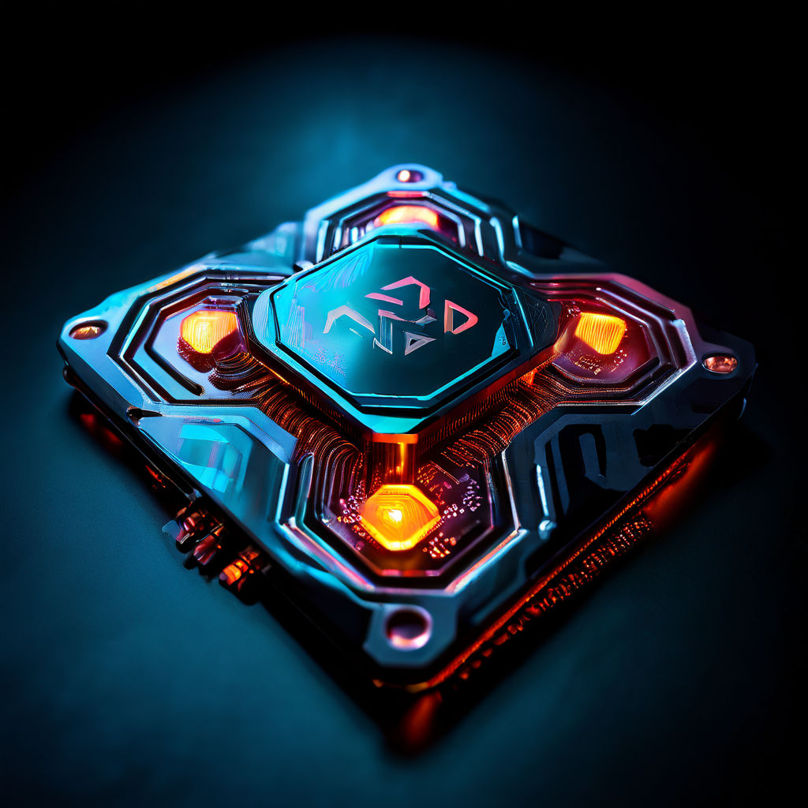

Author: Edison VARGAS
Date: Mars 22, 2024
In the fast-paced world of technology, one name stands out as a beacon of innovation and leadership: Dr. Lisa Su, the CEO of AMD. With her strategic vision and relentless pursuit of excellence, Dr. Su has not only transformed AMD into a powerhouse in the semiconductor industry but is also revolutionizing the future of computing. Under her guidance, AMD has consistently pushed the boundaries of what is possible, and nowhere is this more evident than in the realm of artificial intelligence (AI).
As AI continues to permeate every aspect of our lives, from virtual assistants to autonomous vehicles, the demand for computing power has never been greater. Recognizing this paradigm shift, Dr. Su has been at the forefront of developing technologies that will shape the AI landscape for years to come. One such area of focus has been the development of AI-driven PCs, which promise to fundamentally change how we interact with our devices.
At the heart of this revolution is AMD's commitment to innovation and collaboration. Dr. Su has fostered a culture of creativity and exploration within the company, empowering engineers and researchers to push the boundaries of what is possible. This approach has led to groundbreaking advancements in AI hardware, including the development of high-performance processors and graphics cards optimized for AI workloads.
But Dr. Su's vision extends beyond just the hardware. She understands that AI is not just about raw computational power but also about creating intuitive and seamless user experiences. To this end, AMD has invested heavily in software development, partnering with industry leaders to create AI algorithms and applications that leverage the full potential of their hardware.
The result of these efforts is a new generation of AI-powered PCs that are faster, smarter, and more efficient than ever before. These machines can handle complex AI tasks with ease, whether it's natural language processing, image recognition, or predictive analytics. From gamers looking for unparalleled performance to professionals seeking to accelerate their workflows, everyone will want an AI PC as the technology progresses.
But perhaps the most exciting aspect of this revolution is its potential to democratize AI. By making powerful AI capabilities accessible to the masses, Dr. Su is paving the way for a future where anyone can harness the power of artificial intelligence to solve problems, unlock new opportunities, and drive innovation.
In conclusion, Dr. Lisa Su's visionary leadership at AMD is driving the development of AI-driven PCs that will revolutionize the way we interact with technology. Through her relentless pursuit of innovation and commitment to collaboration, she is not only shaping the future of computing but also empowering individuals and businesses to thrive in an AI-driven world. As the technology continues to progress, everyone will want an AI PC, and thanks to Dr. Su, that future is closer than ever before.